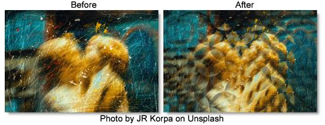

S_FlysEyeCircles
Description
Breaks the image into circle shaped tiles and transforms the image within each shape to create a fly's eye view effect.
The S_FlysEyeCircles filter comes from the Emmy award winning Boris FX Sapphire filter set.
Category
Stylize.
Controls
Presets
To select a preset, pick one from the Presets window.
Tile Frequency
The frequency of the tile pattern. Increase for more smaller tiles.
Tile Rel Height
The relative height of the tile shapes. Increase for taller tiles.
Tile Shift X & Y
Translates the tile pattern.
Circle Overlap
Determines the method used to combine the overlapping regions of the circles.
Ave
Uses a weighted average across the overlapping region for a smooth transition.
Screen
Uses a screen operation.
Max
Uses the lighter.
Min
Uses the darker.
Mult
Uses a multiply operation.
Circle Radius
The radius of the circles relative to each other. If this is less than 1, you will get empty spaces between the circles. The color of these empty spaces will be either transparent, black, or white depending on the Combine mode.
Edge Softness
The softness of the edges of the circles. If this is increased, it may also be necessary to lower the Circle Radius to avoid rectangular artifacts where the soft edges overlap.
Inside Zdist
Determines the zoom factor of the image inside each tile. Values greater than 1 zoom out, values less than 1 zoom in. If this is 1, Inside Rotate is 0, and Overall Zdist is 1, the result should be the same as the original image.
Inside Rotate
The rotation angle of the image inside each tile, in degrees.
Overall Zdist
Creates an overall zooming effect by making each tile look toward or away from the image center. Decrease to zoom in or increase to zoom out. When 0, all tiles should contain identical images.
Wrap
Determines the method for accessing outside the borders of the source image.
No
Gives black beyond the borders.
Tile
Repeats a copy of the image.
Reflect
Repeats a mirrored copy. Edges are often less visible with this method.
Filter
If enabled, the Source image is resampled using pixel averaging. This removes aliasing and gives a higher quality result especially when Inside Zdist is large. It may not be necessary if your original image is smooth or Inside Zdist is small.
Crop Input
These 4 parameters, Crop Top, Crop Bottom, Crop Left, and Crop Right, allow selecting a rectangular subsection of the image to be processed. If the Wrap parameters are set to "No", the exposed borders will be transparent. If the Wrap is "Tile" or "Reflect", the source image is wrapped on the new cropped borders to fill the frame. This can make it easier to avoid artifacts due to distorting an image with bad edges.
Show Tile Freq
Enables/disables the on-screen control for adjusting the Tile Frequency parameter.
Show Tile Shift
Enables/disables the on-screen control for adjusting the Tile Shift parameter.